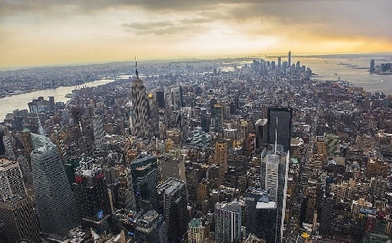

Empire State Building
The site of the Empire State Building, in Midtown South on the west side of Fifth Avenue between West 33rd and 34th Streets, was developed in 1893 as the Waldorf Astoria Hotel. In 1929, Empire State Inc. acquired the site and devised plans.
Contact Us
Brooklyn bridge
The Brooklyn Bridge is a hybrid cable-stayed/suspension bridge in New York City, spanning the East River between the boroughs of Manhattan and Brooklyn. Opened on May 24, 1883, the Brooklyn Bridge was the first fixed crossing of the East River.
Contact Us

Top of the rock
Believe the hype. Soaring 70 floors above New York City, Top of the Rock’s three levels of indoor and outdoor observation decks deliver spectacular, unobstructed 360 degree views of the city skyline. No trip to NYC is complete without a visit